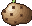
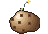
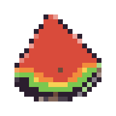
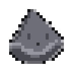
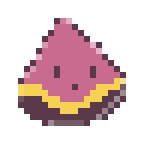

这一版和之前的区别：不是换配色，是立体系。
① 卡牌图案用真像素画（我代码画的土豆），不再用 emoji
② 间距全部是 4 的倍数：4 / 8 / 12 / 16 / 24 / 32（之前是随手写 8/11/14/17）
③ 圆角只有 2 档：4px / 8px（之前有 8 种取值）
④ 描边统一 2px、阴影只有一种（0 3px 0，像像素偏移）
⑤ 颜色只有 8 个，全部从土豆像素画里取的真色（不再有随手加的渐变）
⑥ 血条改成分段像素格（不是圆滑条）—— 和像素画同一个语言


| 项目 | 之前（乱） | 现在（体系） |
|---|---|---|
| 间距 | 8 / 11 / 14 / 17 混用 | 4 / 8 / 12 / 16 / 24 / 32（全是 4 的倍数） |
| 圆角 | 6 / 9 / 11 / 14 / 16 / 18 / 20 / 34 | 4px（小）· 8px（大）—— 像素风要小圆角 |
| 描边 | 1~4px 都有 | 统一 2px |
| 阴影 | 3 种（软阴影 + 硬阴影 + 发光） | 1 种：0 3px 0 深色（像素偏移感） |
| 字重 | 只有 bold 和 900 | 3 档：500 常规 / 700 中 / 900 重 |
| 颜色 | 随意加的渐变和霓虹粉 | 8 个，全部取自像素画真色 |
| 血条 | 圆滑渐变条 | 分段像素格（和像素画同一语言） |
| 背景 | 糖果色大圆点 | 细点阵纸纹（12px 网格，双层错位） |


